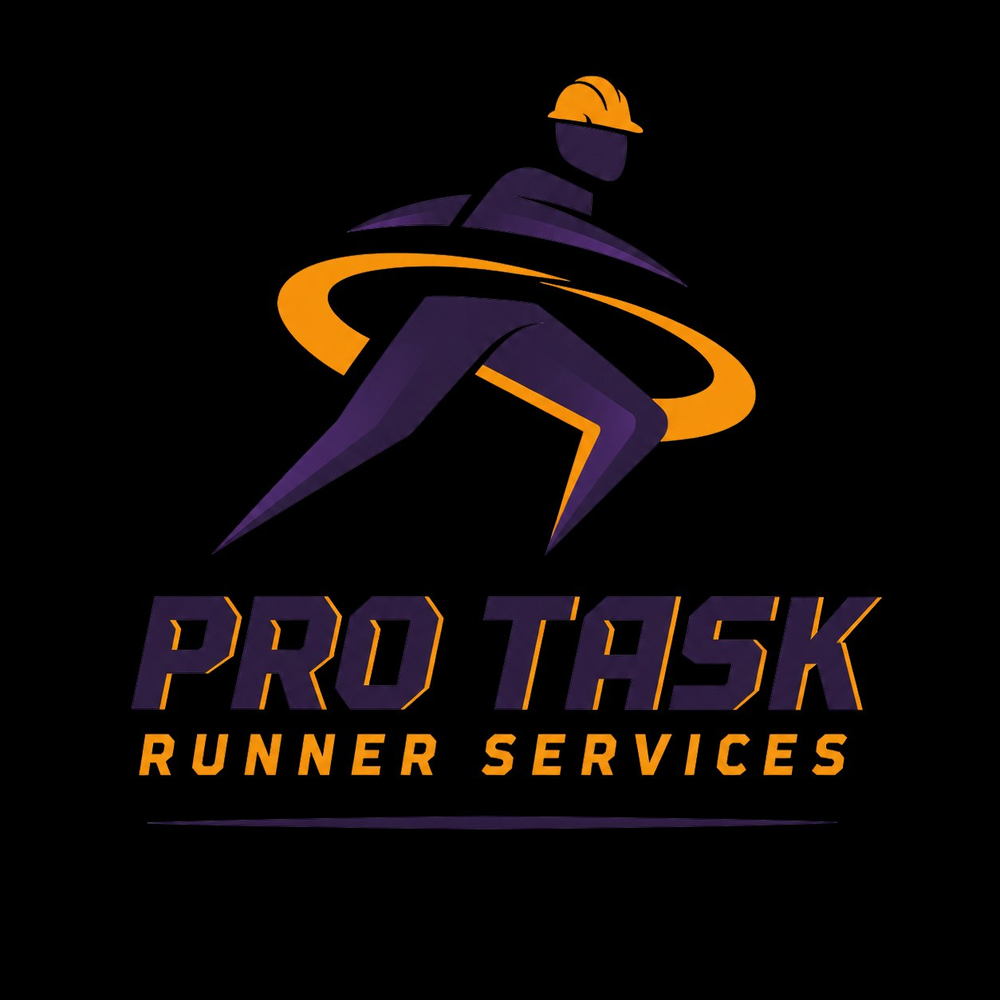

סקיצת אתר ראשונית מחוברת ל־protaskrunner.com (GitHub Pages). אין עדיין סוכנים, אין סכמת נתונים, אין אינטגרציות. הריבוע הזה מסמן את הפרויקט במרכז הבקרה כדי שיהיה לאן לחזור — וכשנגדיל אותו, נוסיף כאן בדיוק כמו שעשינו ל־MAKEUP BLOWOUT.
💡 רוצה לעדכן את ה־roadmap או להוסיף תוכן? תגידי לי מה — אני אערוך את הדף הזה ישירות בריפו.